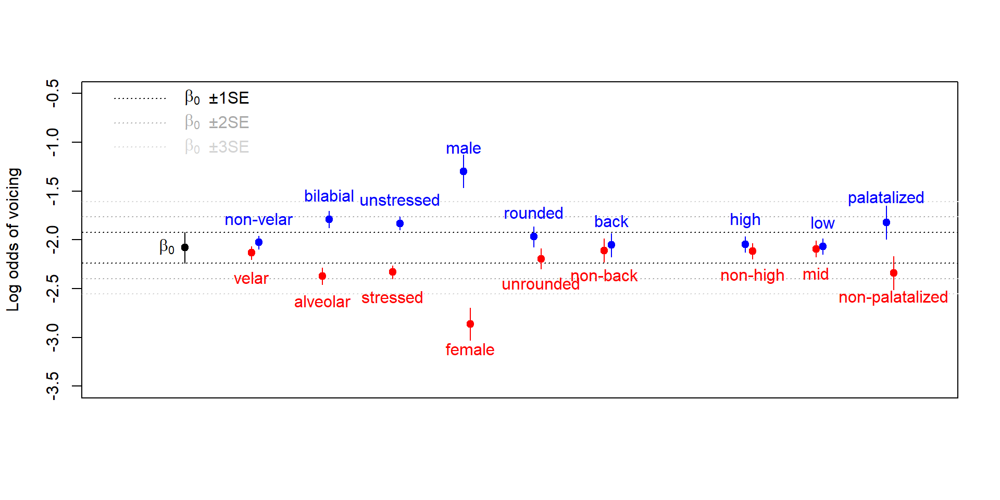

| /p t k/ | → | [pʰ tʰ kʰ] | / | SP | skalpere |
| [p t k] | / | WP | skalp | ||
| /b/ | → | [p] | / | SP | købte |
| [p ~ ʊ̯] | / | WP | købe | ||
| /d/ | → | [t] | / | SP | validere |
| [ɤ̯] | / | WP | valid | ||
| /g/ | → | [k] | / | SP | bagte |
| [ɪ̯] | / | WP, _ [-back, -high] | bage | ||
| [ʊ̯] | / | WP, _ [+back, -high] | bagværk | ||
| Ø | / | WP, _ [+high] |
Variation in fine phonetic detail modulates the outcome of sound change
The case of stop lenition in Jutland Danish
Rasmus Puggaard-Rode
2023-12-07
Road map
The problem
Danish stop gradation
Research questions
Methods and materials
- The corpus
- The stats
Results
Discussion and conclusions
The problem
Multiple degrees of freedom in the phonetic realization of laryngeal contrasts
- The “neat” voiced–unaspirated–aspirated distinction looks more like an unbroken continuum
The problem
Multiple degrees of freedom in the phonetic realization of laryngeal contrasts
- The “neat” voiced–unaspirated–aspirated distinction looks more like an unbroken continuum
- Languages vary w.r.t. voicing and F0 perturbations in unpredictable ways
- Do these details impact higher-order linguistic structures?
The problem
Laryngeal realism: [±voice] is insufficient for two-way laryngeal contrasts
- Regressive voicing assimilation common in ‘true voice’ languages
- Progressive aspiration assimilation common in ‘aspiration’ languages
- Debuccalization found in ‘aspiration’ languages
Does phonology care about anything smaller?
The problem
We have good reason to assume the answer is yes from other domains
- Velar palatalization before front vowels is the result of small differences in burst noise characteristics
- Lenition predominantly targets codas because word-final information is more contextually predictable, and as such, hypoarticulated
The problem
Enter: Danish stop gradation!
- Phonological process which targets stops
- Outcome known to vary geographically
- Stop phonetics also known to vary geographically
- Relevant varieties documented in a huge legacy corpus

Danish stop gradation
Danish phonology makes reference to strong and weak prosodic positiosn
- Strong positions (SP) are onsets before a full vowels
- Weak positions (WP) are codas and onsets before a neutral vowel, i.e. [ə] or [ɐ], as well as [i] in some morphemes
Danish stop gradation
Modern Standard Danish (MSD) shows alternations between
- Aspirated stops in SP, unaspirated stops in WP
- Unaspirated stops in SP, semivowels in WP
This is often interpreted as an active phonological process
- Colleagues and I have argued against this
Danish stop gradation
Danish stop gradation: variation
- Stop gradation affected almost the entire Danish-speaking area, but the precise outcomes differed
- Thanks to a historically strong tradition of dialectology, this variability has long been well-described
Danish stop gradation: variation
Danish stop gradation: variation in /b/
Danish stop gradation: variation in /g/

Danish stop gradation: variation in /d/

Danish stop gradation: variation
Research questions
Broad RQ:
- Are sound changes sensitive to the phonetic details of laryngeal contrast beyond broad descriptive features like ‘aspiration’ and ‘true voice’?
Narrow RQ:
- Is the variation in stop gradation patterns in Jutland Danish limited to WP, or are there meaningful correlates in SP?
Hypotheses
Stop gradation led to an increase in aperture almost across the board
The outcomes of stop gradation were affected by the precise implementation of the laryngeal contrast
- The degree of sonority is reflected in the ‘phonetic sonority’ of stops
- I.e., more voicing, less aspiration = more sonorous
Hypotheses

Hypotheses
The data
A bit of background
- The past century has been very hard on regional variation in Denmark
- The traditional dialects of Danish are mostly moribund or extinct
Tape recordings were gathered from elderly dialect speakers in the early 1970s
The data
The corpus consists of
- 525 sociolinguistic interviews
- 370 hours of speech data
- Almost entirely unused…and un-annotated :-(
The data
This study
213 different recordings
49 women, 164 men
Mean age = 77.4 years
- I.e., this is roughly the same generation captured in the dialect maps of Bennike & Kristensen (1898–1912)
The data
Acoustic analysis
First step: finding the stops
- By…
- …listening through the recordings -_-
- And noting the rough locations of each stop until 50 /p t k/ tokens were found
- Noting the locations of /b d g/ tokens in that same time span
Acoustic analysis
| Phoneme | Number of tokens |
|---|---|
| /p/ | 1,386 |
| /t/ | 5,169 |
| /k/ | 4,095 |
| /p t k/ total | 10,650 |
| /b/ | 2,212 |
| /d/ | 2,369 |
| /g/ | 2,273 |
| /b d g/ total | 6,854 |
Acoustic analysis
- Positive voice onset time was measured manually in /p t k/
Acoustic analysis
- Positive voice onset time was measured manually in /p t k/

Acoustic analysis: voiced or not voiced?
Stats
Generalized additive mixed models
- Very useful for modeling non-linear effects
- Omnipresent in linguistics in the past half decade
Stats
Generalized additive mixed models
- Very useful for modeling non-linear effects
- Omnipresent in linguistics in the past half decade
In this case, spatial GAMMs
Stats: model structure
Dependent variables
Voice onset time
- Scaled t distribution
Presence or absence of voicing
- Binomial distribution
Stats: model structure
Two-dimensional smooth modeling geographical coordinates
Independent variables
- Place of articulation
- Stress
- Speaker gender
- Preceding boundary
- Palatalization
- Vowel features (roundness, backness, height)
Stats: model structure
- Independent variables were coded with sum or Helmert contrasts
- By-speaker random slopes for all independent variables
- Fitted in R with
mgcv
Results: VOT
Results: VOT
Results: VOT
Results: VOT
Results: voicing
Results: voicing
Results: voicing
Results: voicing
Results: voicing
Discussion: regional variation
In MSD, voicelessness in /b d g/ is maintained with glottal spreading
- This serves to block intervocalic voicing
- It is unlikely that (Northern) Jutlandic varieties have this gesture
- For some speakers, voicing is even found in absolute initial position, which requires extra effort
Discussion: regional variation
The observed patterns suggest that stop gradation = increase in aperture in /b d g/
If /b d g/ are voiced at high rates, the result should be a voiced fricative or an approximant
If /b d g/ are largely voiceless, the results should be a voiceless fricative
- …and we might expect increased prominence of aspiration in /p t k/
Discussion: regional variation

Discussion: regional variation

Discussion: Modern Standard Danish
MSD provides a counterexample!
- Laryngeal contrast is highly aspiration-oriented
- Stop gradation outcomes is highly sonorous
- Why?
Discussion: Modern Standard Danish
Contrast in MSD used to be more voicing-oriented
- More voicing during the first stages of stop gradation
- Subsequent drift towards more aspiration, less voicing in SP
- This severed any synchronic connection between SP and WP allophones
- Jutland stop gradation has more hallmarks of an active phonological process
Conclusion
Uncovered systematic, highly gradient patterns of variability in VOT and voicing rates in Jutland Danish
These patterns have direct parallels in the outcome of stop gradation in other prosodic positions
This suggests that fine phonetic detail directly impacts sound change/phonological processes
- Broadly defined features are insufficient!
Tak for opmærksomheden!
References
Lancaster University Phonetics Lab
Arboe Andersen, Torben. 1981. Dialektbånd og databehandling. Ord & Sag 1, 11–18.
Beckman, Jill, Michael Jessen & Catherine Ringen. 2013. Empirical evidence for laryngeal features. Aspirating vs. true voice languages. Journal of Linguistics 49(2), 259–284. doi:10.1017/S0022226712000424.
Bennike, Valdemar & Marius Kristensen. 1898–1912. Kort over de danske folkemål med forklaringer. Copenhagen: Gyldendalske Boghandel.
Carignan, Christopher, Phil Hoole, Esther Kunay, Marianne Pouplier, Arun Joseph, Dirk Voit, Jens Frahm & Jonathan Harrington. 2020. Analyzing speech in both time and space. Generalized additive mixed models can uncover systematic patterns of variation in vocal tract shape in real-time MRI. Laboratory Phonology 11(2). doi:10.5334/labphon.214.
Chen, Yiya. 2011. How does phonology guide phonetics in segment-f0 interaction? Journal of Phonetics 39(4), 612–625. doi:10.1016/j.wocn.2011.04.001.
Cho, Taehong & Peter Ladefoged. 1999. Variation and universals in VOT. Evidence from 18 languages. Journal of Phonetics 27(2), 207–229. doi:10.1006/jpho.1999.0094.
Cyran, Eugeniusz. 2011. Laryngeal realism and laryngeal relativism. Two voicing systems in Polish? Studies in Polish Linguistics 6, 45–80.
Fischer-Jørgensen, Eli & Hajime Hirose. 1974. A preliminary electromyographic study of labial and laryngeal muscles in Danish stop consonant production. Status Report on Speech Research 39/40, 231–253.
Goldshtein, Yonatan & Rasmus Puggaard. 2019. Overblik over danske dialektoptagelser. Ord & Sag 39, 18–28.
Guion, Susan Guignard. 1998. The role of perception in sound change of velar palatalization. Phonetica 55(1), 18–52. doi:10.1159/000028423.
Hall, Kathleen Currie, Elizabeth Hume, T. Florian Jaeger & Andrew B. Wedel. 2018. The role of predictability in shaping phonological patterns. Linguistics Vanguard 4. doi:10.1515/lingvan-2017-0027.
Hjelmslev, Louis. 1951. Grundtræk af det danske udtrykssystem med særligt henblik på stødet. Selskab for Nordisk Filologi. Årsberetning for 1948/49/50, 12–21.
Honeybone, Patrick. 2002. Germanic obstruent lenition. Some mutual implications of theoretical and historical phonology. PhD dissertation, University of Newcastle upon Tyne.
Honeybone, Patrick. 2005. Diachronic evidence in segmental phonology. The case of obstruent laryngeal specifications. In Marc van Oostendorp & Jeroen van de Weijer (eds.), The internal organization of phonological segments (Studies in Generative Grammar 77), 318–351. Berlin & New York: Mouton de Gruyter. doi:10.1515/9783110890402.317.
Horslund, Camilla Søballe, Rasmus Puggaard-Rode & Henrik Jørgensen. 2022. A phonetically-based phoneme analysis of the Danish consonant system. Acta Linguistica Hafniensia 54(1), 73–105. doi:10.1080/03740463.2021.2022866.
Hutters, Birgit. 1985. Vocal fold adjustments in aspirated and unaspirated stops in Danish. Phonetica 42(1), 1–24. doi:10.1159/000261734.
Iverson, Gregory K. & Joseph C. Salmons. 1995. Aspiration and laryngeal representation in Germanic. Phonology 12(3), 369–396. doi:10.1017/S0952675700002566.
Kirby, James P. & Maryann Tan. 2023. Analyzing variability in closure voicing and co-intrinsic F0 in Central Standard Swedish. In Radek Skarnitzl & Jan Volín (eds.), Proceedings of the 20th International Congress of Phonetic Sciences, 2244–2248. Prague: Guarant.
Kristiansen, Tore. 2003. Danish. In Ana Deumart & Wim Vandenbussche (eds.), Germanic standardizations. Past to present (Impact. Studies in Language and Society 18), 69–91. Amsterdam & Philadelphia: John Benjamins. doi:10.1075/impact.18.04kri.
Ladd, D. Robert. 2011. Phonetics in phonology. In John Goldsmith, Jason Riggle & Alan C. L. Yu (eds.), The handbook of phonological theory (Blackwell Handbooks in Linguistics), 348–373. 2nd ed. Chichester: Wiley-Blackwell. doi:10.1002/9781444343069.ch11.
Lindblom, Björn. 1990. Explaining phonetic variation. A sketch of the H&H theory. In William J. Hardcastle & Alain Marchal (eds.), Speech production and speech modelling (Nato Science Series d 55), 403–439. Dordrecht: Kluwer. doi:10.1007/978-94-009-2037-8_16.
Lisker, Leigh & Arthur S. Abramson. 1964. A cross-language study of voicing in initial stops. Acoustical measurements. Word 20, 384–422. doi:10.1080/00437956.1964.11659830.
Lombardi, Linda. 1999. Positional faithfulness and voicing assimilation in Optimality Theory. Natural Language and Linguistic Theory 17(2), 267–302. doi:10.1023/A:1006182130229.
Maegaard, Marie & Malene Monka. 2019. Patterns of dialect use. Language standardization at different rates. In Marie Maegaard, Malene Monka, Kristine Køhler Mortensen & Andreas Candefors Stæhr (eds.), Standardization as sociolinguistic change. A transversal study of three traditional dialect areas (Routledge Studies in Language Change), 27–46. London & New York: Routledge. doi:10.4324/9780429467486-2.
Ohala, John J. 1992. What’s cognitive, what’s not, in sound change. In Günter Kellerman & Michael D. Morrissey (eds.), Diachrony within synchrony. Language history and cognition (Duisburg Papers on Research in Language and Culture 14), 309–355. Frankfurt am Main: Peter Lang.
Pedersen, Inge Lise. 2003. Traditional dialects of Danish and the de-dialectalization 1900–2000. International Journal of the Sociology of Language 159, 9–28. doi:10.1515/ijsl.2003.012.
Puggaard, Rasmus. 2021. Modeling regional variation in voice onset time of Jutlandic varieties of Danish. In Hans Van de Velde, Nanna Haug Hilton & Remco Knooihuizen (eds.), Language variation. European perspectives VIII (Studies in Language Variation 25), 79–110. Amsterdam & Philadelphia: John Benjamins. doi:10.1075/silv.25.04pug.
Puggaard-Rode, Rasmus. 2022. Analyzing time-varying spectral characteristics of speech with function-on-scalar regression. Journal of Phonetics 95, 101191. doi:10.1016/j.wocn.2022.101191.
Puggaard-Rode, Rasmus. 2023a. Stop! Hey, what’s that sound? The representation and realization of Danish stops (LOT Dissertation Series 631). Amsterdam: Netherlands Graduate School of Linguistics. doi:10.48273/LOT0631.
Puggaard-Rode, Rasmus. 2023b. The /t/ release in Jutland Danish. Decomposing the spectrum with functional PCA. In Radek Skarnitzl & Jan Volín (eds.), Proceedings of the 20th International Congress of Phonetic Sciences, 3262–3266. Prague: Guarant.
Puggaard-Rode, Rasmus, Camilla Søballe Horslund & Henrik Jørgensen. 2022. The rarity of intervocalic voicing of stops in Danish spontaneous speech. Laboratory Phonology 13(11). doi:10.16995/labphon.6449.
Rischel, Jørgen. 1970. Consonant gradation. A problem in Danish phonology and morphology. In Hreinn Benediktsson (ed.), The Nordic languages and modern linguistics, 460–480. Reykjavík: Vísindafélag Íslendinga.
Schad, Daniel J., Shravan Vasishth, Sven Hohenstein & Reinhold Kliegl. 2020. How to capitalize on a priori contexts in linear (mixed) models. A tutorial. Journal of Memory and Language 110. doi:10.1016/j.jml.2019.104038.
Skautrup, Peter. 1944–1970. Det danske sprogs historie. Copenhagen: Gyldendal.
Solé, Maria-Josep. 2018. Articulatory adjustments in initial voiced stops in Spanish, French and English. Journal of Phonetics 66, 217–241. doi:10.1016/j.wocn.2017.10.002.
Uldall, Hans Jörgen. 1936. The phonematics of Danish. In Daniel Jones & Dennis Butler Fry (eds.), Proceedings of the 2nd International Congress of the Phonetic Sciences, 54–57. Cambridge: Cambridge University Press.
Voeten, Cesko C. & Claartje Levelt. 2019. ERP responses to regional accent reflect two distinct processes of perceptual compensation. Frontiers in Neuroscience 13(546). doi:10.3389/fnins.2019.00546.
Wedel, Andrew B., Adam Ussishkin & Adam King. 2019. Crosslinguistic evidence for a strong statistical universal. Phonological neutralization targets word-ends over beginnings. Language 95(4), 428–446. doi:10.1353/lan.2019.0082.
Wieling, Martijn. 2018. Analyzing dynamic phonetic data using generalized additive mixed modeling. A tutorial focusing on articulatory differences between L1 and L2 speakers of English. Journal of Phonetics 70, 86–116. doi:10.1016/j.wocn.2018.03.002.
Wieling, Martijn, John Nerbonne & R. Harald Baayen. 2011. Quantitative social dialectology. Explaining linguistic variation geographically and socially. Plos One 6(9). doi:10.1371/journal.pone.0023613.
Wood, Simon N. 2017. Generalized additive models. An introduction with R (Texts in Statistical Science). 2nd ed. Boca Raton: CRC Press. doi:10.1201/9781315370279.
Wood, Simon N. 2022.
mgcv. Mixed GAM computation vehicle with automatic smoothness estimation. Version 1.8-41. https://CRAN.R-project.org/package=mgcv.